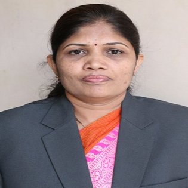

Designation : Associate Professor
Department:Electronics and Computer Engineering
Date of joning : 24/08/2010
Qualifications :
UG:Chemistry (Distinction)
PG:Organic Chemistry (First Class)
Ph.D:Organic Chemistry
Total Experience :
Teaching : 17 Years
Industry : --
Dr. Chine Sonali Shankarrao is an Assistant Professor in the Department of Electronics and Computer Engineering at SRES' Sanjivani College of Engineering, Kopargaon. Having joined the institution on August 24, 2010, she brings 17 years of teaching experience to her role. Her academic qualifications in chemistry include an undergraduate degree completed with Distinction in 2005 from S.P.P.U. Pune, a postgraduate degree in Organic Chemistry earned with First Class in 2007 from S.P.P.U. Pune, and a Ph.D. in Organic Chemistry completed in 2020 from Dr. Babasaheb Ambedkar Marathwada University, Aurangabad. For correspondence, she can be contacted via email at chinesonalify@sanjivani.org.in or by phone at 9822817766.
Over the course of her academic career, Dr. Chine has produced an extensive body of research, including dozens of published and presented papers in journals such as the Journal of the Indian Chemical Society, Dalton Transactions, Biological Forum, European Chemical Bulletin, and Asian Journal of Chemistry. Her research primarily focuses on catalyst development, heterocyclic synthesis, microwave irradiation, ultrasonic techniques for solvent-solvent interactions, and environmental remediation. In addition to her journal contributions, she has authored two books—Engineering Chemistry (published by JEC Publication) and Practical Handbook of Engineering Chemistry (published by Orangebook Publication)—and holds a design patent for "Plastic Waste Management" (Design No. 373986-001, issued January 9, 2023). Her research visibility is maintained across platforms including Google Scholar, Scopus, and ORCID.
Dr. Chine has received multiple recognitions for her academic and scientific contributions, including the Young Women Scientist Award in January 2025 (presented by the School of Sciences, Sanjivani University, and Sanjivani Arts, Commerce & Science College, in collaboration with MBSI, Ural Federal University, and VIBHA), the Best Outstanding Researcher Award by the Kamarajar Institute of Education & Research (KIER) in December 2020, and the Best Oral Presentation Award at a national conference in 2018. She routinely updates her pedagogical and technical expertise through faculty development programmes and workshops on topics ranging from outcome-based education and NBA accreditation to waste-to-energy conversion, intellectual property rights, and ICT tools. Furthermore, she has delivered invited talks on topics such as research methodology, pollution mitigation for sustainable development, and biotechnology research.